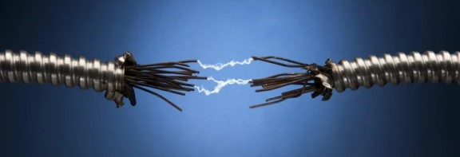

Meet our conductor
As you can see, we don't use a human conductor here. We use electrical conductor for the precision timing and mistake-less performance. You can expect nothing less from us.
Bee Movie Script - Dialogue Transcript
According to all known lawsof aviation, there is no way a beeshould be able to fly. Its wings are too small to getits fat little body off the ground. The bee, of course, flies anyway because bees don't carewhat humans think is impossible. Yellow, black. Yellow, black. Yellow, black. Yellow, black. Ooh, black and yellow! Let's shake it up a little. Barry! Breakfast is ready! Ooming! Hang on a second. Hello? - Barry? - Adam? - Oan you believe this is happening? - I can't. I'll pick you up. Looking sharp. Use the stairs. Your fatherpaid good money for those. Sorry. I'm excited. Here's the graduate. We're very proud of you, son. A perfect report card, all B's. Very proud. Ma! I got a thing going here. - You got lint on your fuzz. - Ow! That's me! - Wave to us! We'll be in row 118, 000. - Bye! Barry, I told you, stop flying in the house! - Hey, Adam. - Hey, Barry. - Is that fuzz gel? - A little. Special day, graduation. Never thought I'd make it.
Three days grade school, three days high school. Those were awkward. Three days college. I'm glad I tooka day and hitchhiked around the hive. You did come back different. - Hi, Barry. - Artie, growing a mustache? Looks good. - Hear about Frankie? - Yeah. - You going to the funeral? - No, I'm not going. Everybody knows,sting someone, you die. Don't waste it on a squirrel. Such a hothead. I guess he could havejust gotten out of the way. I love this incorporatingan amusement park into our day. That's why we don't need vacations. Boy, quite a bit of pomp...under the circumstances. - Well, Adam, today we are men. - We are! - Bee-men. - Amen! Hallelujah! Students, faculty, distinguished bees, please welcome Dean Buzzwell. Welcome, New Hive Oity graduating class of... ...9:15. That concludes our ceremonies.
As you can see, we don't use a human conductor here. We use electrical conductor for the precision timing and mistake-less performance. You can expect nothing less from us.
We don't have money to buy any expensive movie-producing high-end digital highly-adjustable camera. So, we will just use YOUR phone to record the whole thing for the best of your experience. Tehepero.